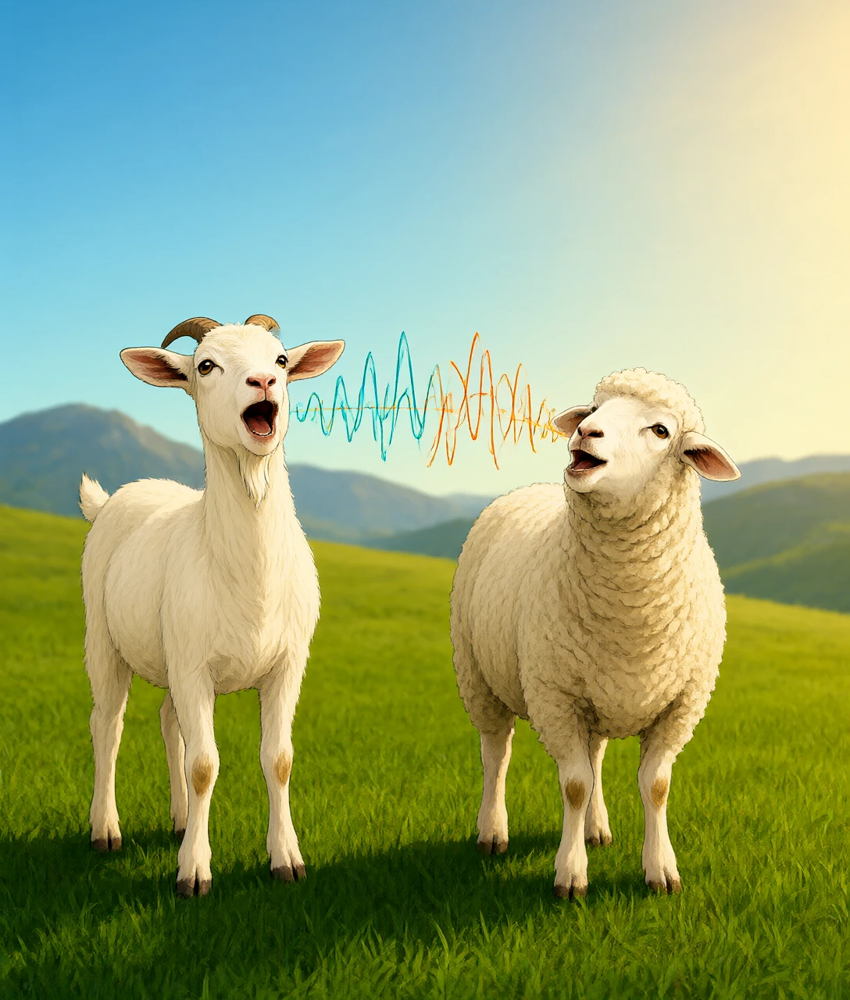
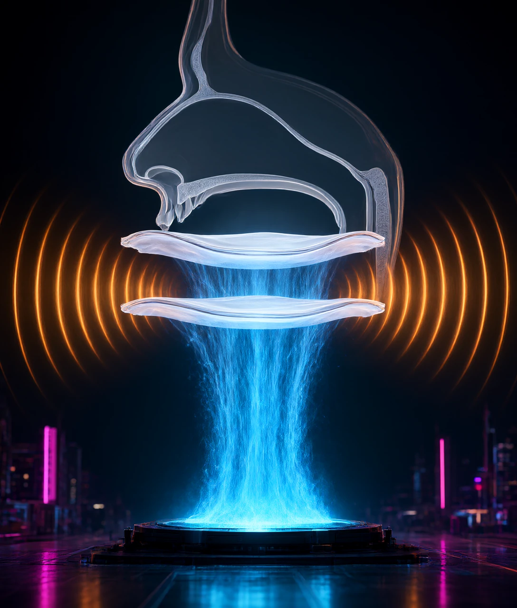
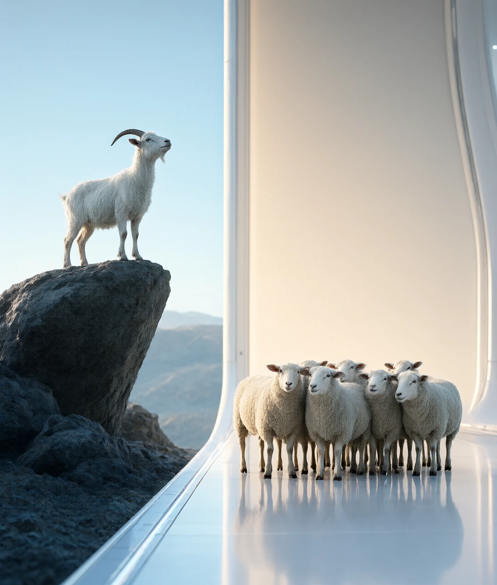
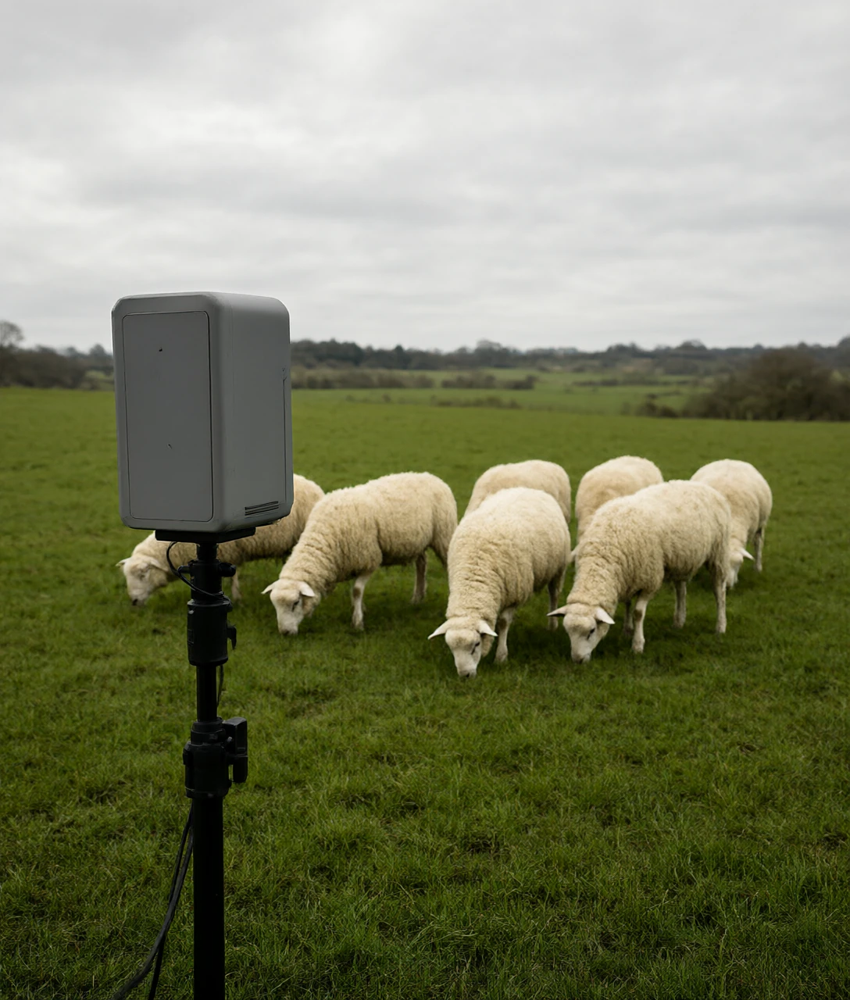

2025 年，志愿者听录音分辨情绪，结果只比瞎猜好一点。两种叫声的差别，到底藏在哪里。

把山羊和绵羊的叫声录下来，放给没养过羊的人听。多数人能分出哪段是绵羊，哪段是山羊。可要问差在哪里，答案往往说不清。
2025 年，一个研究团队做了类似的实验。志愿者听山羊在不同情境下的叫声，判断它的情绪。结果比随机猜测好一些，但没有好太多。
这说明一件反常识的事。两种羊的叫声确实不同，但不同不等于好认。人的耳朵只抓住了一部分线索。
打个比方，就像听两种方言。都能听出不是本地话，真要分辨口音来自哪个县，就难了。
那声音到底从哪来，差异又藏在哪一层？
声音都从喉咙里的一对薄膜开始。这对薄膜叫声带，气流冲过去，它就来回振动。就像吹一张纸的边，纸会嗡嗡响。
振动的快慢，就是频率。频率的单位是赫兹，指每秒振动多少次。人耳能听的范围，大约 20 到 20000 赫兹。
声带只是声源。声音离开喉咙，还要经过嘴和鼻子。这些空腔会把某些频率放大，把另一些压下去。真实情况是，同一副声带换个空腔，听感就变了。
吉他也是这个道理。弦决定音高，琴身决定音色。羊的脑袋就是那个琴身。
既然都有声带和空腔，两者的差别出在哪一段？

先听两段真实录音。上面是山羊，12 秒；下面是绵羊，8 秒。两段都取自公有领域的野外记录。
声学记录给出一组数字。山羊叫声的主要频率，多在 4000 赫兹以下。绵羊的叫声，多在 2500 赫兹以下。不同测量的结果差别不小，这只是大致范围。人说话的声音大约落在 1000 赫兹附近，换算一下，山羊的音调比人高出一截。
响度也不同。有记录把山羊叫声记到 80 分贝，绵羊约 60 分贝。60 分贝大约等于正常说话的音量，80 分贝相当于路边车流。分贝每增加 10，听起来的响度大约翻一倍。
还有颤音。绵羊的叫声常带上下起伏，山羊的更平、更直接。研究者用声学软件看波形，就能看到这种不同。
打个比方，山羊像吹短哨，绵羊像拉长音。真实情况是声带振动快慢和空腔形状一起决定了这些差别。
听见了差别之后，下一个问题是：为什么会分成这样？
山羊和绵羊约在 10000 年前先后被驯化。驯化就是人把野生动物一代代养成了家养的。但两者走的路不一样。
山羊更独立，爱爬高，遇到动静会先报警。绵羊更依赖群体，落单就紧张，叫声主要用来保持联系。
打个比方，山羊像站岗的，喊一声是提醒大家；绵羊像在人群里找伴，喊一声是问你在哪。真实区别在于各自的生活环境，不在嗓门大小。
叫声还能报身份。野外有记录，母羊能从上百只羊里认出自己孩子的叫声。研究者做过实验，把羔羊换到别处，母羊的反应会变。
既然都是家养的，为什么一个偏报警，一个偏联系？

上面说的都是趋势，不是铁律。同一只山羊，高兴和害怕时的叫声能差出一大截。2022 年有研究指出，人能听出山羊叫声里的情绪线索，但判断得并不准。年龄也起作用，小羊的叫声比成年羊尖。
还有个边界要讲清。这些数字只有在圈养品种身上才站得住。野生的山羊和绵羊，叫声记录少得多，学界对它们的差异还没有一致结论。超出圈养这个范围，上面那些频率就不一定成立。
打个比方，用两段录音就把两种羊分开，像看两片叶子就认识一片森林。真实的叫声是一个范围，不是一条固定的线。
剩下的难题是自动识别。有人尝试用程序分辨羊的叫声，看能不能提前发现生病或慌张的个体。这条路还早，误差有多大仍在争论。可查的方向，是声学监测在牧场里的实地测试。

两者都有声带，都用一对薄膜振动发声。差别出在振动快慢、空腔形状和叫声起伏上。
气流冲过薄膜会让它振动，就像吹纸片边沿发出嗡嗡声。声带也是一对薄膜。
记录显示山羊多在 2000 到 4000 赫兹，绵羊多在 1000 到 2500 赫兹。不同测量差别不小。
数字多来自圈养品种。野生个体的叫声记录少得多，学界还没有一致结论。
这条路还早，误差有多大仍在争论。可查的方向是声学监测在牧场里的实地测试。